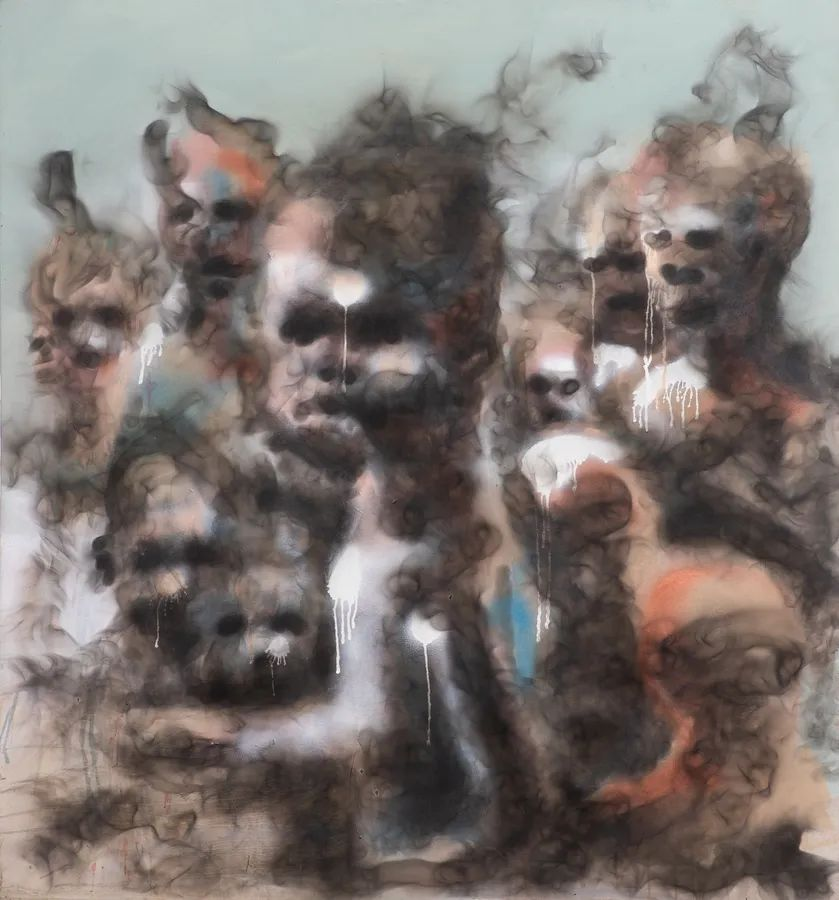

Depuis son enfance, Bamouin Sinzé se transporte dans un monde intérieur, à part, un monde de chimères au sein duquel il peut se recueillir. Le geste plastique lui permet de donner vie aux figures qui l’habitent, de donner forme aux ombres. Si cet univers n’est pas tangible, il n’en est pas pour autant inexistant. Pour Bamouin Sinzé, chacun de nous en a une connaissance intime et propre, mais seuls certains ont la curiosité ou la témérité de l’assumer et de se l’approprier.
Sous sa toile renversée, la plupart du temps de nuit, Bamouin Sinzé, une bougie à la main, dessine dans l’air des lignes, des cercles, des courbes, à la manière d’une écriture invisible. La fumée transcrit ces gestes sur la toile par des marques grises et vaporeuses, fragiles. L’évanescence apparaît alors comme étant au centre de son œuvre. L’artiste cherche à représenter un fragment de temps immortalisé, à saisir l’impalpable, à figurer ce qui, inexorablement, finit par disparaître. Privacy Policy Manage cookies Copyright © 2026 Galerie Cécile Fakhoury Site by Artlogic Go Souscrivez à notre bulletin Instagram , opens in a new tab. Facebook , opens in a new tab. This website uses cookies This site uses cookies to help make it more useful to you. Please contact us to find out more about our Cookie Policy. Manage cookies Reject non essential Accept Cookie preferences Check the boxes for the cookie categories you allow our site to use Cookie options Strictly necessary Required for the website to function and cannot be disabled. Preferences and functionality Improve your experience on the website by storing choices you make about how it should function. Statistics Allow us to collect anonymous usage data in order to improve the experience on our website. Marketing Allow us to identify our visitors so that we can offer personalised, targeted marketing.
Expositions à la galerie